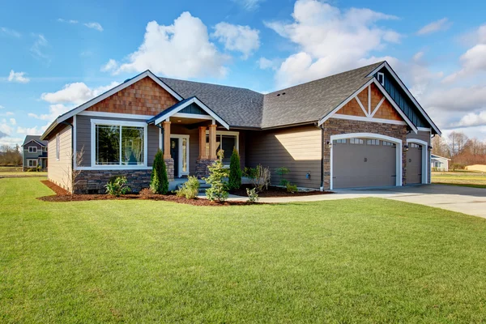

Bem-vindo à Imobiliária Lar Feliz!
É com grande alegria que abrimos as portas do nosso espaço para receber você. Aqui na Imobiliária Lar Feliz, não vendemos apenas casas; construímos sonhos, criamos laços e transformamos desejos em realidade.
Ao entrar em nossa imobiliária, você não é apenas mais um cliente; você se torna parte da nossa família. Nossa missão é guiá-lo em uma jornada emocionante em busca do lar perfeito, aquele que reflete a sua essência, os seus sonhos e os seus desejos mais profundos.
Há muito tempo, em uma pequena cidade à beira-mar, surgiu uma imobiliária que mudaria para sempre a forma como as pessoas encontravam seus lares. Fundada por um visionário chamado Eduardo Silva, a Imobiliária Lar Feliz nasceu do desejo de proporcionar não apenas casas, mas sim verdadeiros refúgios onde as famílias pudessem construir suas vidas e compartilhar momentos de felicidade.
Desde o início, Eduardo tinha uma visão clara: não se tratava apenas de vender propriedades, mas sim de criar laços, de entender os sonhos e necessidades de cada cliente. Com uma equipe dedicada e apaixonada pelo que fazia, a Imobiliária Lar Feliz logo se destacou não só pela qualidade de seus imóveis, mas também pelo atendimento caloroso e personalizado.
Ao longo dos anos, a reputação da Imobiliária Lar Feliz se espalhou, atraindo clientes não apenas da cidade, mas também de regiões vizinhas e até mesmo de outras partes do país. Eduardo e sua equipe tornaram-se conhecidos não apenas como corretores de imóveis, mas como conselheiros e amigos, sempre dispostos a guiar seus clientes na jornada em busca do lar perfeito.
Cada transação na Imobiliária Lar Feliz era mais do que uma simples compra ou venda; era uma história sendo escrita, um capítulo novo na vida de cada pessoa que ali encontrava seu lar. E assim, a imobiliária se tornou parte integrante da comunidade, celebrando junto com as famílias as conquistas e os momentos especiais que cada novo lar trazia.
Com o passar dos anos, a Imobiliária Lar Feliz cresceu e se expandiu, mas nunca perdeu sua essência. Eduardo Silva continuava à frente da empresa, inspirando sua equipe a seguir os mesmos princípios de dedicação, honestidade e paixão pelo que faziam. E assim, geração após geração, a Imobiliária Lar Feliz continuou a escrever sua história de sucesso, deixando um legado de lares felizes e corações gratos por onde passava.